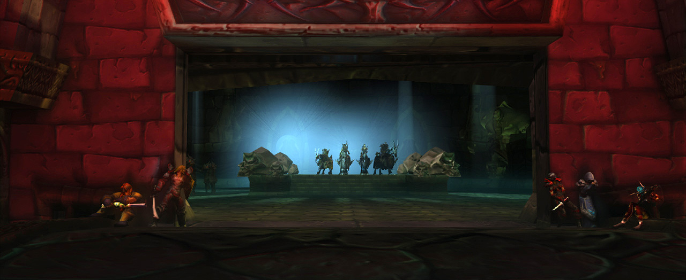

From WoW to Death Knight Love Story
One of the joys of Death Knight Love Story has been the chance to reimagine and reinvent the places of World of Warcraft which I've enjoyed playing through for so many years.
Because of the way that we made DKLS, we had the basic 3D models for each location, but we had to recreate the atmosphere, inhabitants and lighting of the area from scratch. And because we were using radically different rendering techniques, we couldn't just copy Blizzard's original art direction.
So here's how we approached reimagining some of the best-known locations from WoW in DKLS.
Check back for more articles over time!
Naxxramas: The Four Horsemen Room
As the original seed for Death Knight Love Story, we knew we HAD to get Naxxramas right. Add to the that fact that of all our locations, this is probably the one that viewers who play WoW will have spent the most time in, and we had a pretty big challenge on our hands.
Naxxramas has a hell of a lot of history for WoW players. Originally, it was the final, hardest 40-man raid in the original hit version of WoW: a place that only the elite players had even seen. And within Naxxramas, the encounter that was most feared was the "Four Horsemen" - the climax of Naxx's "Military Wing", and probably the most challenging encounter for any player in Vanilla WoW.
I was playing WoW at the time Naxx came out, but I was never elite enough to go there. However, when the Wrath of the Lich King expansion came out, Blizzard decided to revamp Naxx and open it up as the first raid of the expansion - and I got to know it very well indeed.
The Silhouette Of The Four Horsemen
Because it's a relic of original WoW, the location of the Four Horsemen is actually very simple: just a raised platform surrounded by skulls in a rectangular room. There's a corridor outside, usually filled with roaming monsters, and a small bridge over some slime before the room itself.
For DKLS, the first thing that Johnnie Ingram and I did was to think about the iconic shots we wanted to get from the space presented to us. An obvious inspiration for shooting the Horsemen was Peter Jackson's treatment of the Nazgul - another group of riders. Watching back through the Lord of the Rings films, the first sequence with the Nazgul chasing the Hobbits stuck out to me: particularly the shots where they are backlit by light fog in a dark forest, causing them to appear as a silhouette on the screen.
But why would they be backlit, and from what?
It's tremendously difficult to keep track of distances and directions inside the maze of Naxxramas, but fortunately we had the advantage of being able to look at the entire model from the outside, and that told us something very interesting: the Four Horsemen's room is actually right on the edge of the structure. And that gave us a way in: what if the entire room was lit by a single archway looking out of Naxxramas?
One backlight and some fog later, and Death Knight Love Story's Naxxramas was starting to take shape.
However, that backlight turned out to be quite a problem: it gave us a brilliant wide shot, but close up it would overpower the characters' faces or cause wierd shapes in the background. As a result, throughout the scene the light ends up changing shape and intensity with virtually every shot. All of that effort's invisible in the end result, though - just another quirk of virtual filmmaking!
When Raid Bosses Don't Aggro
We already knew that the room itself would follow Blizzard's original art direction of blue and green lights - the same colour palette used all through Naxxramas and one of the standard palettes they use for the Undead controlled by the Lich King as a whole. So when we decided to add the adventurers waiting to attack the Horsemen (that scene actually only came in with the fourth draft of the film), we lit their tiny "refuge" outside the main room with warm, alive lights in red and yellow, to still give the sense of danger but contrast the living adventurers with the Death Knights waiting inside.
We actually made one of our very rare changes to WoW's architecture here. I'd recalled from many evenings spent waiting to attack the Horsemen that it was possible to hide behind the walls outside the Four Horsemen's room - but when we came to location-scout in game, we discovered that unless we wanted our adventurers lurking in green slime, there was no space to do that!
As a result, we had to extend the walls a few feet into the archway, then slightly rebuild the pillars, all in order to fix the sight lines.
It ended up being a perfect illustration of the problems of translating a game location into film. In the game, we never questioned why the Horsemen didn't attack despite the fact they could clearly see us - we knew they had an "aggro radius", and if we didn't get within it, we were safe. But as soon as the same situation was translated to film, it was patently ridiculous!